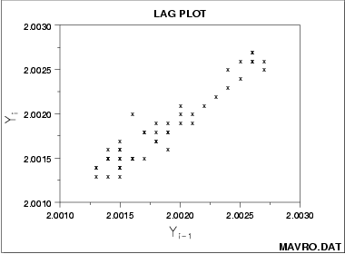

|
1.
Exploratory Data Analysis
1.3. EDA Techniques 1.3.3. Graphical Techniques: Alphabetic
|
|||
| Purpose: Check for randomness | A lag plot checks whether a data set or time series is random or not. Random data should not exhibit any identifiable structure in the lag plot. Non-random structure in the lag plot indicates that the underlying data are not random. Several common patterns for lag plots are shown in the examples below. | ||
| Sample Plot |
 This sample lag plot exhibits a linear pattern. This shows that the data are strongly non-random and further suggests that an autoregressive model might be appropriate. |
||
| Definition |
A lag is a fixed time displacement. For example,
given a data set Y1, Y2 ...,
Yn, Y2 and
Y7 have lag 5 since 7 - 2 = 5. Lag plots can
be generated for any arbitrary lag, although the most commonly
used lag is 1.
A plot of lag 1 is a plot of the values of Yi versus Yi-1
|
||
| Questions |
Lag plots can provide answers to the following questions:
|
||
| Importance | Inasmuch as randomness is an underlying assumption for most statistical estimation and testing techniques, the lag plot should be a routine tool for researchers. | ||
| Examples | |||
| Related Techniques |
Autocorrelation Plot
Spectrum Runs Test |
||
| Case Study | The lag plot is demonstrated in the beam deflection data case study. | ||
| Software | Lag plots are not directly available in most general purpose statistical software programs. Since the lag plot is essentially a scatter plot with the 2 variables properly lagged, it should be feasible to write a macro for the lag plot in most statistical programs. | ||